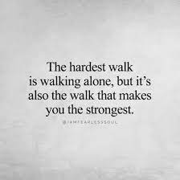

What is meaning of being independent?
Independent. What does it mean to be independent? Does independence mean the same thing as being free? Everyone experiences independence in different ways. Some experience independence in little tasks, such as a young child learning to zip their own coat on a cold winter day. Others experience independence as being on their own, living in a home with no higher authority. There are many different viewpoints on what it really means to be independent and when true independence is ultimately reached. So, what exactly is independence? Independence is the act or state of being independent. Being independent means "not influenced or controlled by others in matter of opinion, conduct, etc..; thinking or acting for oneself " (Independent-Dictionary). Independence means having freedoms of choice and action, but it does not mean one is left with no higher control to report to. Independent people still have laws to abide, morals to acknowledge, and values to fulfill. Independence can include characteristics such as being self-reliant, individualistic, and self-determined.
For me To be INDEPENDENT doesn’t mean just to do things on your own or steady income,
It means to be independent in your thoughts,in your actions.
It doesn’t mean that you don’t need people in your life…it’s like even if you fall somewhere then you
have secureness of having people in your life who will surely give you their hands to get up but…Be that much independent
and strong…emotionally,mentally and physically to stand up on your own before they step.
Being strong and independent doesn’t mean you push away others. It doesn’t mean you refuse to let anyone close to you because you
can handle your problems on your own. It doesn’t mean you shut out the rest of the world and isolate yourself because you’re better off
without anyone else.

Leave a comment